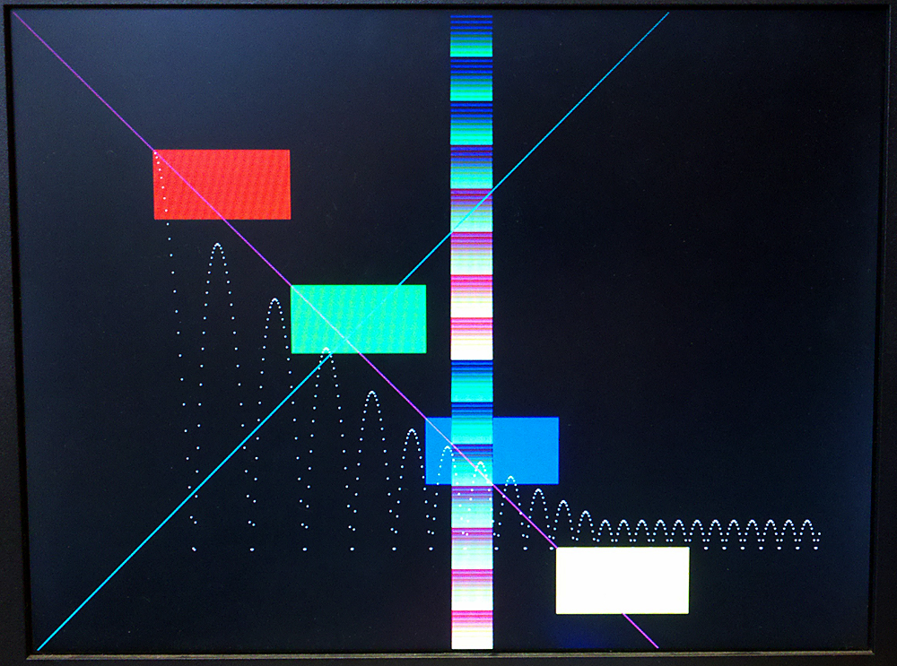

The Altera University video core defaults to 320x240 resolution.
The following shows how to set up a project for 640x480
From Jason/Jeremy/Sima 2013:
Here's how to get the University IP libraries to work at 640x480:
1) Copy C:\altera\11.0\University_Program\NiosII_Computer_Systems\DE2\DE2_Media_Computer into your project folder
2) Open Altera Monitor, go to New Project, choose directory and name, press next
3) Choose <Custom System>. For System Details, select the PTF file and SOF file from the directory you copied the DE2_Media_Computer folder to (they are in the verilog subfolder). Next
4) Under "Program Type", choose "Program with Device Driver Support". Next
5) Under Source files, add the C file (You can use DE2_Media_Computer/app_software_HAL/media_graphics_HAL/media_graphics_HAL.c to get started.) Click through the next screen.
6) Open up verilog/DE2_Media_Computer.qpf in Quartus
7) Open up SOPC Builder by going to Tools > SOPC Builder
8) Delete the VGA_Scaler module
9) Double click VGA_Pixel_Buffer, change Width to 640, Height to 480, and Color Space to 8-bit RGB
10) Double click VGA_Pixel_RGB_Resampler and change the Incoming Format to 8-bit RGB
11) Double click Alpha_Blending and change Alpha Blending Mode to Normal
12) Expand VGA_Pixel_RGB_Resampler and right click on avalon_rgb_source. In the menu that appears, mouse over the first option and check Alpha_Blending.avalon_background_sink (or avalon_foreground_sink, not sure what this affects)
13) Click Generate. This will rebuild the .ptf file
14) In Altera Monitor, compile the project and load it onto the board. You may find that you need to recompile the .sof file in Quartus if it complains about timestamp mismatch. You may also need to restart Altera Monitor and use the upload prompt it gives you at the beginning instead of using the programmer dialog in Quartus.
From Bruce:
This seems to work in 640x480 in pixel mode:
(example 2: C:\altera\11.0\University_Program\Examples\IP_Core_Demos\Video_Demos_using_SOPC_Builder\DE2\Example_2_Pixel_Buffer)
Open the Quartus project.
Open SOPC builder and unclick “Use” box on Pixel_scaler
Change Pixel_biffer_DMA to 640x480 8-bit RGB
Change Pixel_rgb_resampler to 8-bit color input
Wire Pixel_rgb_resampler rgb_source to Dual_clock_fifo sink
Generate system and compile Verilog and download to FPGA.
Paste C source code below (Modified example 2)
Compile and download
You should see some rectangles on the screen, a band of color down the center and a couple of lines.
A screenshot is at the end of the code.
/* From SOPC builder, the ptf entry:
Entry Pixel_Buffer/avalon_sram_slave
{
address = "0x00000000";
span = "0x00080000";
is_bridge = "0";
}
This entry shows the value for the symbol "pixel_buffer" below
*/
#define red 0xe0e0
#define green 0x1c1c
#define blue 0x0303
#define yellow 0xfcfc
#define cyan 0x1f1f
#define magenta 0xe3e3
#define white 0xffff
#define black 0x0000
void VGA_box (int, int, int, int, short); // x1,y1,x2,y2,color
void VGA_point (int, int, short); // x,y,color
/*********************************************************************
* This program demonstrates use of VGA pixel buffer.
*********************************************************************/
int main(void)
{
int i, vx, vy, x, y, count ;
VGA_box (0, 0, 639, 479, 0); // clear screen
// draw boxes
VGA_box (100 /*x1*/, 100 /*y1*/, 200 /*x2*/, 150 /*y2*/, red);
VGA_box (200 /*x1*/, 200 /*y1*/, 300 /*x2*/, 250 /*y2*/, green);
VGA_box (300 /*x1*/, 300 /*y1*/, 400 /*x2*/, 350 /*y2*/, blue);
VGA_box (400 /*x1*/, 400 /*y1*/, 500 /*x2*/, 450 /*y2*/, yellow);
for (i=0; i<480; i++) {
VGA_box (320, i, 350, i, (i<<8)+(i & 0xff));
VGA_point(i, i, magenta);
VGA_point(480-i, i, cyan);
}
vx = 1 ;
x = 100 ;
y = 100 ;
while(count<500) {
vy = vy + 1 ;
x = x + vx ;
y = y + vy ;
if (y>400) { y = 400; vy = -(vy-(vy>>3));}
if (y<10) { y = 10; vy = 0;}
if (x>600) { x = 600; vx = -vx;}
if (x<10) { x = 10; vx = -vx;}
VGA_point(x, y, white);
count++ ;
}
}
/*********************************************************************
* Draw a point on the VGA monitor
********************************************************************/
void VGA_point(int x1, int y1, short pixel_color)
{
int offset, row, col, current_pixel_color, new_color ;
/* Declare volatile pointer to pixel buffer
(volatile means that IO load and store instructions will be used to
access these pointer locations, instead of regular memory loads and
stores) */
// VGA pixel buffer address
volatile short * pixel_buffer = (short *) 0x00000000;
/* assume that the box coordinates are valid */
offset = (y1 << 9) + (x1 >> 1);
current_pixel_color = *(pixel_buffer + offset) ;
// now low order bit in 16-bit word
if (x1 & 0x1) new_color =
(current_pixel_color & 0x00ff) | (pixel_color & 0xff00);
else new_color =
(current_pixel_color & 0xff00) | (pixel_color & 0x00ff);
// compute halfword address, set 2 pixel
*(pixel_buffer + offset) = new_color;
}
/*********************************************************************
* Draw a filled rectangle on the VGA monitor
********************************************************************/
void VGA_box(int x1, int y1, int x2, int y2, short pixel_color)
{
int offset, row, col, current_pixel_color, new_color ;
/* Declare volatile pointer to pixel buffer
(volatile means that IO load and store instructions will be used to
access these pointer locations, instead of regular memory loads and
stores) */
// VGA pixel buffer address
volatile short * pixel_buffer = (short *) 0x00000000;
/* assume that the box coordinates are valid */
for (row = y1; row <= y2; row++)
{
col = x1;
while (col <= x2)
{
offset = (row << 9) + (col>>1);
current_pixel_color = *(pixel_buffer + offset) ;
// now low order bit in 16-bit word
if (col & 0x1) new_color =
(current_pixel_color & 0x00ff) | (pixel_color & 0xff00);
else new_color =
(current_pixel_color & 0xff00) | (pixel_color & 0x00ff);
// compute halfword address, set 2 pixel
*(pixel_buffer + offset) = new_color;
++col;
}
}
}
